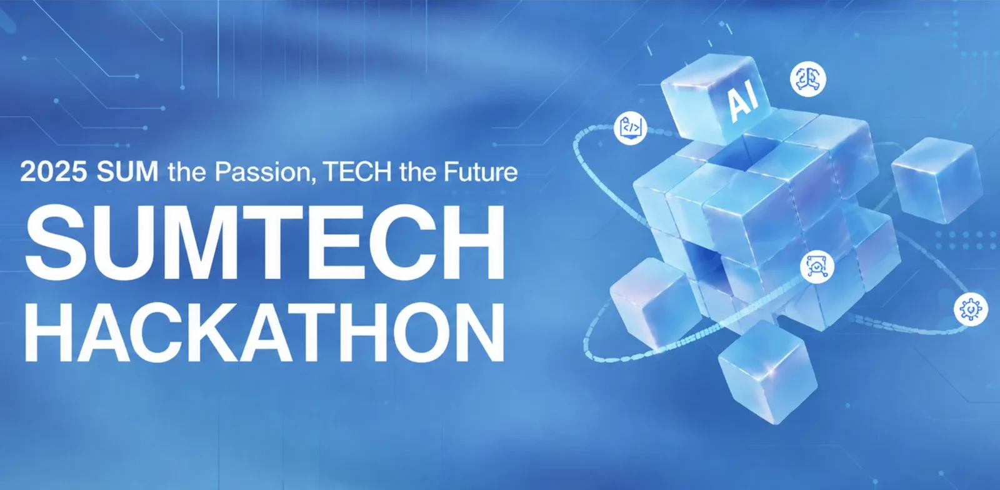

實事求是
실사구시 · 사실에 근거해 답을 찾는다
데이터를 하나로 맞추고 검증부터 세우는
AI 엔지니어 정지성입니다
형식이 제각각인 데이터일수록 무엇을 버렸는지 기록하고, 같은 사람의 데이터가 학습과 평가에 섞이지 않게 나눕니다.
LLM을 서비스에 붙일 때는 정답을 맞히는 것만큼 확실하지 않으면 멈추는 규칙을 먼저 설계합니다.
History
이력
- 2026.01 ~ 2026.12삼성청년 SW·AI 아카데미(SSAFY) 15기Embedded Robot 트랙
- 2022.03 ~ 2026.02조선대학교 인공지능공학전공 졸업AI소프트웨어학부
- 2024.06 ~ 2025.12조선대학교 창업동아리 부회장선박 결함 탐지 · 정비 상담 챗봇 기획 · 개발
- 2023.05 ~ 2024.06IDP Lab (Intelligent Data Processing) 학부연구생심전도 기반 운전자 식별 연구 · KCI 논문 1저자
Certificates & Awards
자격증 & 수상
자격증
- NAVER Cloud Platform Certified Associate2025.08
- C++ A형--
수상
- SSAFY 15기 공통 프로젝트 우수상2026.08
- 동남권 이노베이션 해커톤 대상2025.11
- SW중심대학 오픈소스 아이디어 경진대회 금상2025.11
- IT 캡스톤디자인 경진대회 은상2025.11
- 2025 SUMTECH 해커톤 대상2025.10
- K Intelligence 프롬프트 엔지니어링 해커톤 본선 5위 (1,020팀 중)2025.09
- 2025 호남권 LLM 해커톤 최우수상2025.08
논문
- TCN-BiLSTM 앙상블 모델 기반 심전도를 이용한 운전자 식별 시스템 · KCI 1저자2024.04
Tech Stack
기술 스택
Language
Python
- pandas · NumPy · pyarrow로 형식이 다른 공개 센서 데이터 2종을 하나의 형식으로 통합하고 제외 사유를 기록하는 전처리 작성
- 피험자 단위 교차검증 · 사건 단위 지표 · 부트스트랩 신뢰구간 평가 코드 작성
- FastAPI 추론 서버, MQTT 위치 수신 서비스 구현
C · C++
- C++ A형 보유, 자료구조 · 그래프 탐색 · 동적 프로그래밍 구현
- UWB 앵커 · 태그의 낙상 · 거리 측정 펌웨어(Arduino) 작성
Java · JavaScript
- Spring 백엔드에서 원시 데이터 보관 기간 자동 삭제 작업과 JUnit 테스트 작성
- Node.js · Express로 지도 · 공공데이터 · LLM API 연동 백엔드 구현
AI · ML
PyTorch · scikit-learn
- 규칙 기준선 · Random Forest · MiniRocket · 1D CNN · TCN을 같은 분할 · 같은 지표로 비교
- 공개 사전학습 모델(harnet5)을 공개 · 자체 수집 데이터로 파인튜닝해 서빙
LLM · RAG
- HyperCLOVA X 일정 추출에서 불확실한 값은 null, 파싱 실패 시 빈 배열을 돌려주는 출력 규칙 설계
- LangChain · FAISS PDF RAG, JSON 스키마 · 재질의 로직, 프레임워크 없이 ReAct 에이전트 직접 구현
- 분류 데이터를 tool-call 형식으로 변환해 GPT-4.1 mini 파인튜닝
Time Series · Biosignal
- 심전도 잡음 제거 · R파 검출 · 분할 기준 비교로 KCI 1저자 논문 게재
Database
MySQL
- 10개 테이블 · 트리거 · 집계 뷰 10개(COUNT DISTINCT 조인, CASE 집계) 설계
- 조회 결과를 LLM 프롬프트에 넣는 백엔드 구현
PostgreSQL
- 17개 테이블 ERD · DDL 초안 작성, 결정이 필요한 항목 10개를 정리해 팀 논의에 전달
Infra
Docker · Compose · Nginx
- 추론 서버 · 위치 서버를 이미지로 만들어 팀 운영 Compose에 서비스로 추가(내부망, 메모리 제한, 모델 볼륨 읽기 전용)
GitLab CI · MQTT
- 머지 요청마다 pytest를 돌리는 CI 검사 단계 추가, 실측 기록을 재생하는 회귀 시험 작성
AI-Assisted
Development
Claude Code · Codex
- 기능 단위 커밋에 AI 코딩 도구 활용
- 데이터 분할 · 지표 · 임계값 같은 설계 판단은 직접 정하고 근거를 문서와 커밋 메시지에 기록
Collaboration
Git · GitLab
- 7인 팀에서 GitLab 머지 요청으로 통합, feature 브랜치 PR 기반 협업
- 실행 명령 · 출력 형식 · 한계를 적은 README와 비전공자용 장비 구성 설명서 작성
Jira
- 이슈 키 단위로 커밋해 작업과 변경 이력 연결
Projects
프로젝트
재현율 95% 기준 시간당 오경보
4.84 → 1.00
Random Forest → MiniRocket · 공개 데이터 피험자 36명 사람 단위 검증
NightinGALE
환자복 센서 태그로 낙상 의심을 알리고 병동 위치를 추적하는 스마트 요양병원 시스템
- Python
- pandas
- PyTorch
- FastAPI
- Docker Compose
- MQTT
2026.10 - 진행 중 · SSAFY 자율 프로젝트
(7인) · 낙상 데이터 · 모델 · 위치 서버자세히 보기 →
(7인) · 낙상 데이터 · 모델 · 위치 서버자세히 보기 →

Naeil Clova
포스터 · 음성 · 텍스트의 일정을 LLM으로 구조화해 캘린더에 등록하는 맞춤형 일정 관리 서비스
- HyperCLOVA X
- LangChain
- FAISS
- FastAPI
- MySQL
2025.08 - 2026.01 · 호남권 LLM 해커톤 최우수상
(5인) · LLM 연동 · 일정 추출 · AI 백엔드자세히 보기 →
(5인) · LLM 연동 · 일정 추출 · AI 백엔드자세히 보기 →

요즘어때
의료 QA 검색 결과를 출처 번호와 함께 LLM 답변에 연결한 AI 건강 셀프체크 서비스
- OpenAI Fine-tuning
- Python
- Elasticsearch
- Docker Compose
2025.10 · SUMTECH 해커톤 대상
(5인) · AI · 분류 데이터 변환 · 파인튜닝자세히 보기 →
(5인) · AI · 분류 데이터 변환 · 파인튜닝자세히 보기 →

ECG 운전자 식별 연구
심전도 잡음 제거와 분할 기준 비교, TCN-BiLSTM 결합 모델로 운전자를 식별한 연구
- Time Series
- TCN
- BiLSTM
- STFT
- MATLAB
2023.05 - 2024.06 · IDP Lab 연구
KCI 1저자 · 전처리 · 모델 설계 · 논문 작성자세히 보기 →
KCI 1저자 · 전처리 · 모델 설계 · 논문 작성자세히 보기 →
그 외 프로젝트
RunWave
부산 공공데이터와 지도 API로 순환 러닝 코스를 만들고, 경로 API가 실패하면 대체 경로로 이어 가는 런케이션 서비스
2025.11 (2일) · 2인 · 동남권 이노베이션 해커톤 대상오픈소스 아이디어 플랫폼
GitHub 저장소 트렌드를 수집해 수준별 프로젝트 아이디어와 실행 계획을 제안하는 서비스로, 백엔드와 API 연동을 구현
2025.11 · 4인 · 오픈소스 아이디어 경진대회 금상PIPE CHECK
하수관로 점검 시스템의 데이터 파트로, 학습 데이터 변환 · 분할과 SAM 2.1 의사 마스크, 3D 뷰어를 구현
2026.07 - 2026.08 · SSAFY 공통 프로젝트 우수상SLM 로컬 코딩 에이전트
로컬 모델로 동작하는 코딩 에이전트로, 프레임워크 없이 ReAct 루프와 도구 권한 제한을 직접 구현
2026.03 · 개인 프로젝트